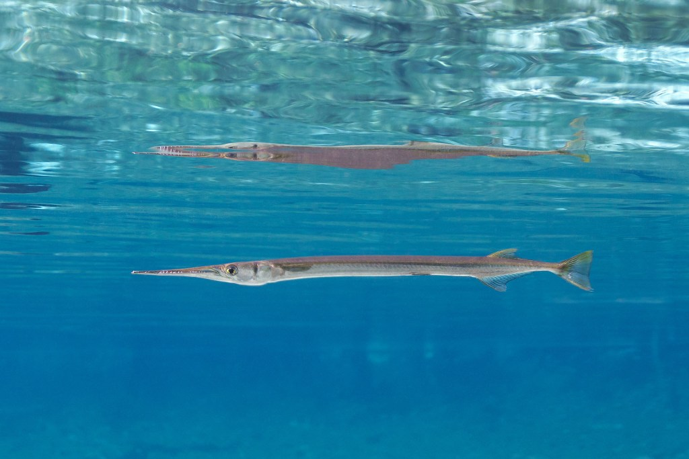

Needlefish (family Belonidae) or long toms[2] are piscivorous fishes primarily associated with very shallow marine habitats or the surface of the open sea. Some genera include species found in marine, brackish, and freshwater environments (e.g., Strongylura), while a few genera are confined to freshwater rivers and streams, including Belonion, Potamorrhaphis, and Xenentodon.
